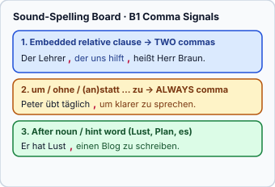

Kommas bei Relativ- und Infinitivsätzen
Mit einem KI-Tutor lernen
Ein KI-Tutor erklärt dir diese Seite und hilft dir bei den Aufgaben. Wähl deinen Assistenten:
Mit Claude öffnen Mit ChatGPT öffnen Mit Mistral Vibe öffnen
Du nutzt dein eigenes Konto beim Anbieter. Der Assistent ist kein Angebot von lernapps.net: lernapps liefert nur Inhalte und Aufgaben. Die Wahl gilt für alle Seiten, nur auf diesem Gerät.
Korrekturlesen für den Lindenberger Schulblog
Peter schreibt einen Artikel für den Schulblog. Auf B1-Niveau werden seine Sätze komplexer: Er beschreibt Personen mit Relativsätzen und nennt Ziele mit um … zu. Auf der Laut-Schrift-Tafel kommen jetzt die B1-Kommaregeln hinzu!
Aufgabe
Lösung
Die Schülerin, die neben Peter sitzt, heißt Nadia. richtige Antwort
Richtig! Der Relativsatz *die neben Peter sitzt* wird links und rechts wie in Klammern von zwei Kommas begrenzt.
Die Schülerin, die neben Peter sitzt heißt Nadia.
Hier fehlt das zweite Komma zwischen den beiden Verben *sitzt* und *heißt*.
Die Schülerin die neben Peter sitzt, heißt Nadia.
Im Deutschen braucht jeder Relativsatz auch am Anfang ein Komma (anders als restriktive Relativsätze im Englischen).
Anders als im Englischen trennt das Deutsche **jeden** Relativsatz mit Kommas ab – steht er in der Satzmitte, braucht er **zwei** Kommas.

© CC0-1.0Peters Laut-Schrift-Tafel: Die drei wichtigsten B1-Kommasignale auf einen Blick.
B1-Kommaregeln für Relativ- und Infinitivsätze
| Satztyp | Kommaregel | Beispiel |
|---|---|---|
| Relativsatz am Ende | immer ein Komma davor | Das ist der Blog**,** den Peter schreibt. |
| Eingeschobener Relativsatz | zwei Kommas (wie eine Klammer) | Der Lehrer**,** der uns hilft**,** heißt Herr Braun. |
| um / ohne / (an)statt … zu | Komma ist immer Pflicht | Peter übt täglich**,** um klarer zu sprechen. |
| Infinitiv mit zu nach Nomen/Hinweiswort | Komma ist Pflicht (z. B. Zeit, Lust, es) | Er hat Lust**,** einen Artikel zu schreiben. |
Die häufigste Kommafalle im Relativsatz
Vergiss bei einem eingeschobenen Relativsatz nie das zweite Komma direkt nach dem Verb des Relativsatzes: Das Fahrrad*,** das im Hof steht**,** gehört Lukas.*
Übung: Komma-Check im Schulblog
Aufgabe
Lösung
Peter geht in die Bibliothek [ ] um in Ruhe zu lernen. richtige Antwort
Richtig! Infinitivsätze mit *um … zu* stehen immer nach einem Komma.
Lukas ging los [ ] ohne seine Jacke mitzunehmen. richtige Antwort
Richtig! Auch *ohne … zu* und *(an)statt … zu* verlangen immer ein Komma.
Mina hat keine Zeit [ ] heute länger zu bleiben. richtige Antwort
Richtig! Die Infinitivgruppe hängt vom Nomen *Zeit* ab → Komma ist Pflicht.
Peter lernt [ ] Deutsch.
Das ist ein einfacher Hauptsatz ohne Nebensatz oder Infinitivgruppe – hier steht kein Komma.
Ein Komma steht immer bei **um / ohne / (an)statt … zu** sowie bei Infinitivgruppen, die von einem Nomen (*Zeit, Lust, Plan*) oder einem Hinweiswort (*es, daran*) abhängen.
Aufgabe
Lösung
Richtige Antwort: 1. Das Fahrrad,, 2. das im Hof steht,, 3. gehört, 4. Lukas.
Der eingeschobene Relativsatz *das im Hof steht* wird links und rechts von zwei Kommas eingerahmt.
Aufgabe
Setze die richtigen Kommas in Peters Sätze für den Schulblog.
- The book that I am reading is exciting. → Das Buch… ich lese… spannend.
- Lukas runs to catch the bus. → Lukas rennt… den Bus zu erwischen.
- We have a plan to start earlier tomorrow. → Wir haben den Plan… früher zu starten.
Lösung
- Das Buch, das ich lese, ist spannend.
- Lukas rennt, um den Bus zu erwischen.
- Wir haben den Plan, morgen früher zu starten.
Eingeschobener Relativsatz → zwei Kommas (, das … , ist); um … zu und Infinitiv nach Plan → Pflichtkomma.
Fehler gefunden oder eine Idee für diese App?